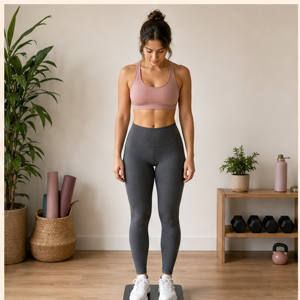

Body Weight Average
Measure from the scale, not from one emotional weigh-in.
- Weigh in first thing in the morning, after the bathroom, before food or drink.
- Stand still with feet centered on the scale.
- Write down the number, then compare weekly averages instead of single days.